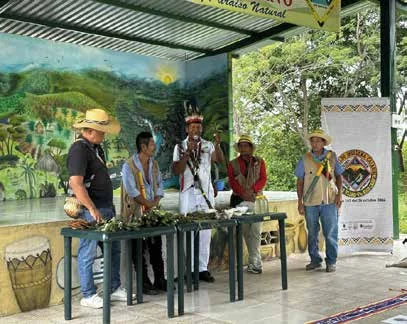
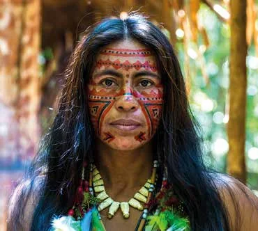
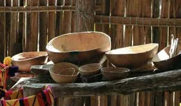
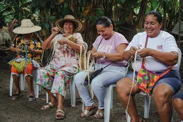

Resistencia
Lideraron una de las defensas territoriales más prolongadas frente a la conquista española, encabezada por caciques como Calarcá. Hoy mantienen la lucha por la autonomía territorial, la dignidad y la protección del agua.
Cosmovisión, pintura corporal y orfebrería
Los Pijao son una etnia indígena originaria del valle del río Magdalena y de las cordilleras del Tolima. Hoy habitan en resguardos de municipios como Coyaima, Natagaima y Ortega. Estos son sus rasgos culturales clave.
Lideraron una de las defensas territoriales más prolongadas frente a la conquista española, encabezada por caciques como Calarcá. Hoy mantienen la lucha por la autonomía territorial, la dignidad y la protección del agua.
Su espiritualidad guarda una relación sagrada con los ríos, los nevados y las montañas, y se expresa en prácticas ceremoniales como la pintura corporal con pigmentos naturales.
Sobresalen por su legado en la alfarería, la cerámica y la orfebrería, con trabajo en oro mediante cera perdida, piedra tallada y tejidos.
Según su cosmogonía, el mundo tiene siete capas, que se resumen en cuatro: el agua salada, base del mundo; el agua dulce; la capa seca o tierra; y la luz, la fuerza y el calor. Los mayores y los sabedores buscan mantener el equilibrio entre esas energías.
Los mohanes, sus líderes espirituales, se refugiaron en las fuentes de agua salada y se volvieron espíritus protectores de las aguas. La ceiba simbolizaba la «Gran Casa» de una naturaleza generosa y materna, y bajo ella se celebraban las mingas.

La pintura corporal con pigmentos naturales es una práctica ceremonial y de identidad. Los cronistas registraron que los Pijao se pintaban de rojo con achiote en polvo (la bija) para los eventos comunitarios, y relacionaban sus adornos con su religión.
Hoy, cuidar la pintura, los tejidos y los adornos es una forma de cuidar la memoria. Por eso la Galería de Resistencia, dentro del Bohío del recorrido virtual, les dedica los marcos «Cosmovisión» y «Arte y oficios».

Los Pijao fueron expertos metalurgistas. Trabajaban el oro con la técnica de la cera perdida, el oro laminado y la filigrana para crear balacas (adornos) y poporos (recipientes con tapa de uso ceremonial). Sus piezas se relacionan con la orfebrería de las culturas Quimbaya, Calima y Cauca.

La alfarería, la piedra tallada y los tejidos conectan el pasado con las manos de hoy.



Vasijas y totumas, roca con petroglifos y mujeres tejiendo: imágenes de referencia del moodboard del manual de marca.
En el Tolima, la comunidad de Chipuelo (El Guamo) mantiene una tradición de cerámica negra ahumada de más de 300 años.